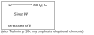

Analysis
Accounts from the Philosophy of Science
(Towards another chapter. What l want to do is: ,
- present the DN account, and it’s defenders.
- present the conventional response
- present the radical response
- add some notes of my own, if possible supported by sources, on the polemic nature of explanation)
This section looks at accounts of explanation culled from the Philosophy of Science. My reason for starting with this field of study is that philosophers in this field have a commitment to express their ideas in strictly formal ways.
Furthermore, the matter of explanation has always been central to the study [see e.g. van Fraassen 80, p 92; Nagel 61, p 4]. Thus it might be hoped that they would produce a formal account of what constitutes a good argument. While it is not necessarily the case that what can be expressed formally will be computationally tractable, a formal statement of an idea is at least a good start towards computability.
In fact this link between formal statement and computability is what makes the methodology of Artificial Intelligence such a good tool for the philosopher. Where a formal description can be encoded into a computer language in a computationally tractable manner, the computer programme can be used to evaluate how well the description matches the phenomenon described, simply by observing how well the computer models this phenomenon. I shall pursue this argument in the second half of this thesis.
Some definitions
In part of the discussion that follows, it will be necessary to use a shorthand to describe some of the different positions that have been adopted at one time or A another by philosophers of science. Two important positions are realism and A empiricism. The positions are only peripheral to the discussion that follows, but in using them I will generally follow van Fraassen’s usage: by realism, I will mean the view that “…science aims to find a true description of unobservable processes that explain the observable ones…” [van Fraassen ’8O page 3] This view holds that a theory is only adequate if it’s description of the world is correct in the finest detail.
By contrast, by empiricism I shall mean the view that a theory is adequate provided it gives a correct account of the observable phenomena. Any underlying mechanism may be postulated, provided that it accounts for the observable behaviour.
I shall also use another term from the same debate - positivism. I shall not use this in the precise sense that van Frassen gives it, but in a looser, more colloquial sense, to define that group of doctrines (including all realist and most empiricist doctrines) which hold that there is a real world, and that that real world is accurately reflected in our perceptions.
Aristotle to Nagel
The Philosophy of Science has had the development of an account of explanation as one of its central projects since Aristotle. Aristotle’s account of explanation was broadly that an explanation was an argument which had the explicandum as its consequent. As, to Aristotle, arguments should be constructed as syllogisms or chains of syllogisms, the correct explanation in response to ‘How do you know that Socrates is mortal?’ would be:
Socrates is a man;
All men are mortal;
Therefore Socrates is mortal.
a syllogism of the mood barbara
This account, which has become known as the ‘hypothetico-deductive’ or ‘deductive-nomological’ account of explanation, has effectively been the dominant account ever since. The classic statement of this account in the present century is probably that given by Hempel [Hempel, 65]. Ernest Nagel [Nagel, 61] attempted to go beyond this to a more general account of explanation, but he included the deductive-nomological form as the first of the four types of explanation which he describes.
Nagel claims, rather baldly, that “Explanations are answers to the question ‘Why?’”, but later goes on to note “…the important point that even answers to the limited class of questions introduced by ‘Why’ are not all of the same kind.” His four types of explanation are: deductive explanations, probabilistic explanations, functional or teleological explanations, and genetic explanations.
Deductive explanations
Nagel’s deductive explanations have the formal structure of a deductive argument, rather in the manner of a logical proof. This is essentially the deductive nomological explanation. In the case of the explanation of singularities, it fits neatly with the Toulmin [below] - or indeed the sylogistic - form of argument: data, plus principle, imply conclusion:
“It is evident that at least one of the premises in a deductive explanation of a singular explicandum must be a universal law…” (page 31)
“… a deductive scientific explanation, whose explicandum is the occurance of some event or the possession of some property by a given object, must satisfy two logical conditions. The premises must include at least one universal law, whose inclusion is essential to the deduction of the explicandum. And the premises must also contain a suitable number of initial conditions.” (page 32)
In the case of the explanation of scientific laws, however:
“…all the premises are universal statements; (and) there is more than one premise, each of which is essential in the derivation of the exp1icandum…” (page 34)
“…at least one of the premises must be ‘more general’ than the law being explained.” (page 37)
The notion of ‘more general’ is discussed at length, and is defined as follows:
"Let L~1~ be a law (or a set of laws and theories constituting some science such as physics), and let ‘P~1~’ ‘P~2~’ … , ‘P~n~’ be a set of ‘primitive’ predicates in terms of which the predicates occuring in L~1~ are in some sense definable. (For the sake of simplicity, and without any loss of the generality of statement, we shall assume that the predicates are all adjectives or ‘one-place’ predicates such as ‘rigid’ or ‘heavy’ …. ) Similarly, let ‘Q~1~’ ‘Q~2~’ … , ‘Q~n~’ be the corresponding set of primitives for a law L~2~. Finally, let K be a class of objects, each of which can be significantly (or meaningfully) characterised, whether truly or falsely, by the predicates of either set …. We shall also say that an object in K satisfies a law L ‘non-vacuously’ only if the object actually possesses the various traits mentioned in the law and, moreover, the traits do stand to each other in the relations asserted by the law…
We now assume the following conditions: (1) Some (and perhaps all) of the predicates in the first set occur in the second, but some predicates in the second set do not occur in the first set. (2) Every object in K has at least one P-property, that is, a property designated by a predicate in the first set. (3) There is a non-empty subclass A of objects in K possessing only P-properties. (4) There is a non-empty subclass
Aof objects in K each of which possesses at least one Q- property that is not a P-property. …. (5) There is a non-empty (but not necessarily proper) subclass B of objects in K each of which satisfies L~1~ non-vacuously, and such that some objects in B belong to A while others belong toA. …. (6) There is a non-empty subclass C of objects in A for which L~2~ holds non-vacuously, and such that some (and perhaps all) of the objects in C also belong to B ….. When these six conditions are fulfilled, L~1~ may be said to be more general in K than L~2~." (pp 40- 41).
(my transcription differs from the original in. that where Nagel uses a character formed of an upper case letter A with a bar over it, I have used a struck-through A; and, more significantly, Nagel uses an unbarred A in condition 4. From my understanding of the text I have assumed this is a misprint, and have substituted an struck-through A.) TODO check typography as processed by Markdown!
Deductive explanations, as stated above, have the general form of the syllogism Barbara. However, Nagel adds a condition: while all the clauses of Barbara are universally quantified, one of the premisses must be more general than the conclusion to qualify as an explanation of it. In the case of an explanation about a singularity, it is trivial that the ‘universal law’ is more general than the ‘initial conditions’; in the case of explanations of generalities, Nagel has gone to lengths to assert this condition.
Nagel rejects as too strong the Aristotelian requirements that the premises of a deductive explanation should not only be true but should be known to be true, and that they should be ‘better known’ than the explicandum. He observes that the ‘universal premises’ which are subsumed into ‘scientific laws’ are true. Instead he suplies the weaker condition that:
“…the explanatory premises be compatible with established empirical facts and be in addition ‘adequately supported’ (or ‘made probable’) by evidence based on data other than the observational data upon which the acceptance of the explicandum is based.” (p 43)
“In maintaining that the premises in an explanation must be ‘better known’ than the explicandum, Aristotle was thus simply making explicit his conception of science. This conception is true of nothing that can be identified as part of the asserted content of modern empirical science,” (p 45)
Probabilistic explanations
Nagel’s second category, probabilistic explanations, depend not on formal implication of the explicandum by the premises contained within the explanation, but on some ‘statistical reregularity’ taking the general form:
Most x are y
a is x
=> it is probable that a is y
Nagel notes that:
“It is still an unsettled question whether an explanation must contain a statistical assumption in order to be a probabilistic one, or whether nonstatistical premises may make an explicandum ‘probable’ in some nonstatistical sense of the word.” (p 23)
Such explanations can be expressed in the Toulmin scheme (see below); but as syllogisms have the general form IAA, which is not valid.
These two types are the models of scientific explanation that Nagel describes; but he also describes two other categories. These are explanation types which appear in natural conversation, and in law and the humanities.
Functional (teleological) explanations
Functional (teleological) explanations are explanations which refer to the supposed purpose of the explicandum:
“lt is characteristic of functional explanations that they employ such typical locutions as ‘in order that’, ‘for the sake of’ and the like.” (p 24)
There are two sub classes of functional explanation. One is the explanation of a particular instance or occurrence: .. .
'I caught hold of the branch so that I would not fall.'
whereas the other explains something which occurs in all instances of a particular class:
'Birds have wings so that they can fly.'
Genetic explanations
Genetic explanations seek to explain why something is the way it is by explaining how it came to be this way:
'My arm is broken because I fell out of a tree'
'Penguins have wings because they evolved from birds which could fly'
It is clear that these are categories where the explanations are neither necessary nor sufficient causes of the explicanda; you don’t have to fall out of a tree to break your arm, and you can break it without falling out. Likewise, there may have been other ways of not falling than catching hold of a branch, and catching hold of a branch may not prevent a fall.
But there are statistical probabilities (not necessarily high) that catching the branch will prevent the fall, and that a fall will lead to a broken arm.
“It is therefore a reasonable conclusion that genetic explanations are by and large probabilistic.” (p 26)
The radical critics
These conventional arguments in the philosophy of science were dramatically disturbed in the 1960s by radical philosophers like Thomas Kuhn [Kuhn, 62] and Paul Feyerabend [Feyerabend, 78; and passim]. Their attack was not directed specifically at accounts of explanation, but at the empiricist and realist views of science as such - which is to say the view – implicit in both – that we can directly access the external world in order to gain knowledge which would support a theory.
The damage to the account of explanation was almost incidental in this process. It was fatal, however; the consensual view of explanation did not survive. A number of accounts of explanation have developed since then; dissapointingly, these all seem to be timid and conservative, attempting to preserve a view of science which is no longer tenable. Following (but not, as far as I am aware, prior to) the radicals onslaught, writers on the philosophy of science developed a formidable arsenal of objections to the deductive-nomological account. I cite here a few drawn from [Korner 75]:
Achinstein, in his note The Object of Explanation, gives some ‘standard counler-examp|es’:
"1. We see a fire engine which is black and demand an explanation. Here is one that satisfies the D-N model:
This fire engine is the same colour as that crow.
All crows are black.
=>This fire engine is black.
2. A bridge collapses and we demand an explanation. Here is one that satisfies the D-N model:
An engineer with years of training and experience examined the bridge and said it would collapse.
Whenever an engineer with years of training and experience examines a bridge and says it will collapse, it does.
=> The bridge collapsed.
These are unacceptable as explanations …. " (page 35)
Hesse, in her rejoinder to Achinstein, writes:
“… there are by now at least three widely accepted general consequences of the ensuing debate which are enough to show that this model is by no means to be taken as the ‘standard model of explanation’.
These are:
(i) It has grave shortcomings as an explication of the structure of explanation in natural science itself.
(ii) The question of whether it usefully applies to explanation in history, psychology, and the social sciences is a matter of current controversy.
(iii) The question of whether any model applying to the natural sciences is adequate also for these human sciences is also highly controversial." (page 46, Hesse’s emphasis)
and finally, Salmon, in a piece entitled Theoretical Explanation, argues:
"… contra Hempel and many others - that an explanation [of a particular event] is not ‘an argument to the effect that the event to be explained was to be expected by reason of certain explanatory facts’…
In addition, I have claimed that the so-called deductive- nomological model of explanation of particular events is incorrect. It is not merely that there are explanandum events which seem explainable only inductively or statistically… There are also cases – such as the man who takes his wife’s birth control pills and avoids pregnancy – in which an obviously defective explanation fulfills the conditions for deductive-nomological explanation. (pp 118-119; the embedded quote is from Hempel, Explanation in Science and in History, in Colodny, ed, Frontiers of Science and Philosophy, University of Pittsburgh Press, Pittsburgh, 1962. The italics are Salmon’s. This birth control example is also mentioned in for example van Frassen 1980)
[Here insert some detailed analysis of Feyerabend’s position, and passing reference to Lakatos and Kuhn]
van Fraassen
Another philosopher who has attracted attention with his work on explanation in recent years is Bas van Fraassen. His work seems directed, however, not primarily at providing better accounts of explanation, so much as at defending the empirical view of science from the realist critics of it - surely, at this late date, a redundant activity. The work is marred, in my opinion, by intellectually dishonest treatment of the radicals, to whom van Fraassen has no honest response.
van Fraassen’s response to the radicals
van Fraassen published his ‘the Scientific Image’ in 1980, in the age of Feyerabend and Kuhn. He mentions both these authors twice, and is clearly familiar with their theses, describing Feyerabend’s work as ‘well known’ (page 14), and paraphrasing one of Feyerabend’s central points (although without acknowledging it):
“… one theory says that there are electrons, and the other says that there may not be. Even if the observable phenomena are as Rutherford says, the unobservable may be different. However, the positivists would say, if you argue that way, you automatically become a prey to scepticism. You will have to admit that there are possibilities that you cannot prove or disprove by experiment, and so you will have to say we cannot know what the world is like. Worse; you will have no reason to reject any number of outlandish possibilities; demons, witchcraft, hidden powers contirbuting to fantastic ends.” (page 35, my emphasis)
Well yes, precisely. And although it is possible that the positivists would say it, Feyerabend did say it, repeatedly; and the choice of words seems to me to betray a consciousness of this [see for example Feyerabend, 81, vol 1, foot of page 196 - which other evidence (below) shows us van Fraassen was familiar with]. But the only time van Fraassen addresses an argument of Feyerabend’s directly, he dismisses it as ‘…a totally false issue…’ (page 93). Let us look a little at the context for this.
van Fraassen is discussing the centrality of explanation to science, citing - and accepting - Nagel’s strong claim [Nagel 61, page 4], and using incidentally the same passage from Nagel as Feyerabend had used in his earlier critique of this work [Feyerabend 81, page 52; this paper originally published in BJPS vol 16, 1964] to illustrate this. He claims that Nagel’s view does not entail realism, but will equally support an empiricist view. He now claims that Feyerabend has advanced the ‘..totally false..’ argument that, in his paraphrase:
’…only Realism is a philosophy that stimulates scientific enquiry; anti-realism hampers it." [page 93]
This is a position that Feyerabend advanced? Really? Feyerabend whose central thesis might be summed up in his phrase “The only principle that does not inhibit progress is: anything goes.” [Feyerabend 75, p10: F’s emphasis]. van Fraassen refers us to Feyerabend’s paper [in Feyerabend 81 vol 1]. What Feyerabend in fact says (forgive me if I quote at length) is:
“To sum up: the issue between realism and instrumentalism has A many facets….. There are arguments for instrumentalism which concern specific theories such as the quantum theory or the heliocentric hypothesis and which are based on specific facts and well confirmed theories. It was shown that to demand realism in these cases amounts to demanding support for implausible conjectures which possess no independent empirical support and which are inconsistent with facts and well confirmed theories. It was also shown that this is a plausible demand which immediately follows from the principle of testability. Hence realism is preferable to instrumentalism even in these most difficult cases.” [Feyerabend 81 vol 1 pp 201-2; Feyerabend’s emphasis.]
‘Realism is preferable to instrumentalism’. That is a very different (and far weaker) claim than ‘only Realism stimulates scientific enquiry’. So the totally false issue is of van Fraassen’s own devising, and has nothing to do with Feyerabend.
I have gone on at some length about van Fraassen’s slight (and slighting) mention of Feyerabend. Why? Well, because van Fraassen, continuing the now moribund debate between realism and empiricism in order to defend the latter, addresses Feyerabend’s criticisms of neither doctrine. This seems an extraordinary ommission.
<Here insert some stuff about van Fs account of explanation…>
Achinstein
One of the first attempts to recover an account of explanation from this mess is that of Achinstein [Achinstein 83]. Achinstein distinguishes between the act of explaining, which is an utterance, and the explanation, which is the product of the act. This act must take place in an appropriate context.
His project is to answer three questions: .
- What is an explaining act?
- What is the product of an explaining act?
- How should explanations be evaluated?
‘Explaining acts’
Achinstein claims that ‘explaining acts’ have a period, and a completion point.
'John was explaining why x'
'John explained x'
The latter form implies a completion has occurred.
An explanation has not occurred until the act of explanation has occurred. For John to have explained why x, it is not sufficient that he knew why x.
‘Explaining’ is illocutionary [see Austin, how to do things with words]; it is done in an appropriate context. Out of such a context, the same statement would be an equivalent perlocutary act: ‘enlightening’, ‘getting <the auditor> to understand’.
The intention of an explaining act must be to engender understanding of the explicanda. Achinstein does not state, but may be taken to imply, that for such an act to take place there must (at any rate in the mind of the explainer) be some explainee or auditor, in whose mind understanding is to be engendered[Achinstein 1].
"The first condition expresses what I take to be a fundamental relationship between explaining and understanding. It is that S explains q by uttering u only if
- S utters u with the intention that his utterance of u render q understandable."(Page ??)
Under this account it is impossible to explain something by accident – a rather over strict condition, l think.
Achinstein also claims that it is neccesary that the utterance produced by the explaining act must be (at least believed to be) a correct account:
"2. S believes that u expresses a proposition that is a correct answer to Q…
Often people will present hints, clues, or instructions which do not themselves answer the questions… Some hints, no doubt, border on being answers to the question. But in those cases where they do not, it is not completely appropriate to speak of explaining."(p 17)
Thus explanation by analogy is no explanation; again, this seems a very strong condition. Yet Achinstein goes on to make this even stronger by the assertion that the proposition expressed by u is itself a complete answer to Q:
“3. S utters u with the intention that his utterance render q understandable by producing the knowledge, of the proposition expressed by u, that it is a correct answer to Q.”(p 18)
Atchinstein goes on to say that ‘explain’ can be used in two senses: a loose sense, in which any situation fulfilling the above contains an explanation; and a more restricted sense, which will “cover only correct explainings”. He does not describe how these may be differentiated, however.
Understanding
If explaining is to be seen as an act directed at engendering understanding, some account of what is meant by ‘understanding’ must be supplied. Achinstein asserts that:
"One understands q only if one knows a correct answer to Q which one knows to be correct (sic)… we can say that a necessary condition for the truth of sentences of the form ‘At understands q’ is
“(∀x)(A knows of x that it is a correct answer to Q)” (p 23 - 4)
Achinstein’s essential problem is quite simple to express: he wants to say that one doesn’t understand something until one not only knows a proposition which expresses the reason for it, and knows that this proposition does in fact express the ‘correct’ reason, but also has internalised this proposition.
‘Content-giving Propositions’
Achinstein identifies a class of nouns which he describes as ‘content-giving’, such as ‘explanation’, ‘meaning’, ‘fact’, ‘reason’. He then defines a class of propositions, constructed using such nouns and the verb to be, which he calls ‘content-giving propositions’. These take roughly the form:
'the <cg-noun> {that | of | for} <proposition x> is
<proposition y>'
Achinstein now expands his definition of understanding to:
“(∃p)(A knows of p that it is a correct answer to Q, and p is a complete content-giving proposition with respect to Q)” (p 42) .
Achinstein examines a number or accounts of the epistemic nature of an explanation, largely to use them as Aunt Sallies, before presenting his preferred account. He examines first explanation considered as sentence and as proposition.
These are rejected for reasons which appear to me quite strange. Achinstein has trouble with the idea that two sentences can be differently constructed but have the same meaning. E.g.:
“…since sentence (1) ≠ sentence (2), the explanation of Bill’s stomach ache given by Dr. Smith ≠ the explanation of Bill’s stomach ache given by Dr. Robinson, which seems unsatisfactory. Intuitively, both doctors have given the same explanation…”(p 76)
What Achinstein dearly wants is some Leibnitzian language in which he can express the semantic content of the sentences. Not having one, it is not sufficient for him to posit that such a thing must exist; so he claims that behind every sentence there is a (presumably unique) proposition, in English. Thus:
“Since sentences (1) and (2) express the same proposition we can conclude that the explanations given by the doctors are the same.”(p 76)
For evidence that the proposition is considered to be unique, see the bizarre argument presented as the ’Locutionary Force Problem’ on p 77. ln this (by my reading) he claims that:
ix if the product of an explanation is a proposition, and it is possible to produce, as separate acts of explanation and of criticism, utterances which map onto the same proposition, then that proposition is at once a criticism and an explanation, which is absurd. Therefore the product of an explanation cannot be a proposition.
I doubt whether this argument has meaning, let alone force. ln this and other arguments, Achinstein seems to confound operations which would be legitimate on some formal grammar with what it is possible to do with natural language.
His view that propositions are unique is made more difficult to maintain by his apparent identification of the propositions themselves with the sequence of symbols used to represent it. For a statement of the view that sequences of symbols are efficient (i.e. that they may have many differing meanings), see e.g. [Barwise and Perry 86, p S2]; ,
He also has trouble with emphasis shifts in propositions which are represented by the same sequence of word-tokens, which he resolves by the concept of ‘e-sentences’ - sentences with additional flagging to indicate the central phrase, so that:
"(7) the e-sentence ‘Bill ate spoiled meat on Tuesday’ is not identical with (8) the e-sentence ‘Bill ate spoiled meat on Tuesday"’ (p 80)
He next considers the deductive-nomological view - the view that an explanation is an argument.
Achinstein argues that the form of the deductive nomological explanation can be seen as an ordered pair <conjunction of premises, conclusion>. This view is dismissed for reasons analogous to those above.
Explanation as ordered pair
Having considered, and dismissed, the preceding accounts of explanation, Achinstein now proposes that explanation should be considered to be an ordered pair <x, y>
s.t.:
"The explanation of q given by S denotes (x; y) if and only if
(i) Q is a content-question; (ii) x is a complete content-giving proposition with respect to Q; (iii) y = explaining q; (iv) (£a)(£u)[a is an act in which S explained q by uttering u -> (r)(r is associated with with a;r=x)]. (i.e., x is the one and only A proposition associated with every act in which S explained q by `uttering something.)"(p 87)
What this appears to boil down to is this:
Achinstein believes any given concatenation of symbols representing a proposition to be identical with that proposition; and that any proposition is unique.
Thus each and every occurance of this sequence of symbols is the same thing.
Yet he believes, as shown above, that it is impossible for (e.g.) an explanation to
In fact, Achinstein’s claim is even stronger than this, for he believes that there is some proposition ‘underneath’ each sentence; thus, potentially, many sentences may map onto the same proposition, and consequently all these sentences may be treated as being identical (l).
be ‘the same thing’ as (e.g.) a criticism. So it is impossible for an explanation to be identical with an occurance of a sequence of symbols.
Thus an ordered pair must be constructed, in which the symbol-sequence is linked with another symbol sequence which represents a reference to the question which was asked.
Note that q, the question, is also a sequence of symbols; so that a pair:
<[all plants are green]; [answering: “why is this grass green”]> .
is unique, and is always the same explanation. Therefore (since Achinstein’s schema makes no mention of an auditor) it is always either a good explanation or always a bad one, regardless of whether the question was asked by a three year old child or a plant physiologist.
I would like to return the readers attention to Achinstein’s claim that:
“One understands q only if one knows a correct answer to Q which one knows to be correct ” [p 23, my emphasis]
and goes on to clarify that, by this, he implies ‘…a de re sense of knowing.’
The use of ‘correct’ here is the problem. It appears to imply that one knows that the answer which one knows maps in some unproblematic way onto something real in the external world. Thus Achinstein, too, falls into the trap sprung by the radicals. In the absence of some definition of what is to be understood by ‘correct’, these definitions are simply meaningless.
This account does not address many of the facets of common sense explanation.
It has nothing to say about the amount of detail contained in an explanation. It has nothing to say about the need to express an explanation in terms of an account of the world which is accessible to the auditor. lt fails to account for the possibility of explanation by analogy, or of unintentional explanation.
It appears that Achinstein’s motivation in producing a new account has less to do with addressing these real world problems than with overcoming such philosophical puzzles as the Paradox of the Ravens; so his account takes us no nearer to providing a model which will support the construction of better common sense explanations. 5
A [ mh L/Go/w%` \
` Eegozi
Toulmin
Turning aside for the moment from those philosophers who have made a study of explanation per se, there is another whose work is currently attracting fashionable attention in Expert Systems (and especially mechanised explanation) circles; one must make passing reference to Toulmin, and, unless one chooses to use his argument schema, one must produce a very good argument for not doing so. Therfore it is important to know what he actually argued.
A Toulmin’s programme was to replace the syllogistic with a new logical schema of his own. He did not address symbolic logic except by dismissing it as irrelevant to the study of real world arguments:
“We shall have to replace mathematically-idealised logical relations - timeless context-free relations between either statements or propositions — by relations which in practical fact are no more than the statements to which they relate. This is not to say that the elaborate mathematical systems which constitute ‘symbolic logic’ must now be thrown away; but only that people with intellectual capital invested in them should retain no illusions about the extent of their relevance to practical arguments.” (Toulmin 58, p 185)
or again:
“…the question needs to be pressed, whether this branch of mathematics (propositional calculus) is entitled to the name ‘logical theory’. If we give it this name, we imply that the propositional calculus plays a part in the assessment of actual arguments comparable to that played by physical theory in explaining actual physical phenomena. But this we have seen reason to doubt: this branch of mathematics does not form the theoretical part of logic… By now, the mathematicians logic has become a frozen calculus, having no functional connection with the canons for assessing the strength and cogency of arguments.” (Ibid, p 186 - and he goes on in this vein!)
TODO: I can use precisely this - and van Frassen’s work, too - to illustrate and underline my case later that the purpose of argument is hegemonistic, not truth-seeking. This is so clearly polemical.
These contentions seem polemical, even propagandistic, in tone; they are certainly not, in Tou|min‘s own terminology, ‘candid’. They advance scant evidence in support of their allegations. They seem out of place in a work whose matter is the analysis of argument; and they lie especially uneasy with Touimin’s claim to be seeking to make argument more scrutable.
He goes on to attack the concept of ‘logicaI form’ and ‘formal validity’ in argument:
“…the suggestion that validity is to be explained in terms of ‘formal properties’, in any geometric sense, loses its plausibility.” (Ibid, p 120)
He argues that the conception that arguments in general could or should have a logical form arises out of a false start in the study of logic:
“The development of logical theory… began historically with the study of a rather special class of arguments -_ namely, the class of unequivocal, analytic, formally valid arguments with a universal statement as ‘major premiss’. Arguments in this class are exceptional in four different ways, which together make them a bad example for general study.” (Ibid, p 144)
Clearly, if arguments have no logical form, it is not possible to advance a decision process for them, and Toulmin does not attempt to do so. Rather, the burden of his argument is that decision processes are (for real world arguments) impossible in principle.
Thus those practitioners in the field of Expert Systems who advance Toulmin as an authority must face up to this corrolary: if Toulmin’s arguments are valid, then there cannot ever be a successful Expert System based on any technology we have now available, as all current Expert Systems are based on some logical formalism (even if, as in the case of production systems, this formalism is crude); and all, certainly, claim to be decision processes for arguments in their domain. As such, according to Toulmin, they are the modern equivalents of the PhiIosophers’ stone - they cannot exist.
He was, to be fair to him, writing in the year that LISP was being developed, when the posibility of mechanical inference was dreamed of only by visionaries like Turing; nevertheless the cavalier manner in which he dismisses all of the 19th and 20th century advances in logic significantly weakens his claims to be taken seriously in this field.
But if Toulmin cannot be taken seriously as a logician, is there any residual value in his work on argument? I think it is possible that there is, because the argument schema with which he hoped to replace both the traditional syllogism, and the formalisms of modern logic, does indeed capture the content of normal conversational discussion in an easily manageable form. Had Toulmin advanced this and this only, I think he might have been taken more seriously; and I think there is merit in the current revival of interest in it.
The Toulmin Schema
Toulmin’s concern is with arguments as they are presented informally, in conversation or writing, and the relation between the form of such informal arguments and the forms recognised by formal logic.
He questions whether the aristotelian ‘standard form’ of an argument is ‘candid’; that is, whether it is presented in such a way as to make its merits as argument most manifest. He suggests that the analysis into only three elements, major premiss, minor premiss, conclusion may be artificially simplified:
“Simplicity is of course a merit, but may it not in this case have been bought too dearly? Can we properly classify all the elements in our arguments under the three headings, ‘major premiss’, ‘minor premiss’ and ‘conclusion’, or are these categories misleadingly few in number? Is there even enough similarity between major and minor premisses for them usefully to be yoked together by the single name…?”
He draws on the practice of jurisprudence to find alternative schemae; and synthesises one such comprising the following elements: a statement of some assertion, which implicitly carries with it a claim as to the truth of the assertion; and data, information which is consensual at the time of argument (or is supported by some futher argument), which tends to support that claim; some inference rule, a warrant, which will allow the argument to move from the data to the claim (for example, ‘all as are bs’), again optionally supported by some further argument or bagking; an optional qualifier (e.g. ‘probably’, ‘I believe’); and, implicit in the qualifier, the possibility of a rebuttal:

In conversation, Toulmin argues, it may be natural simply to say ‘<data> so <c|aim>’ ; to say ‘<c|aim> because <warrant> because <data>’ “…strikes us as cumbrous and artificial, for it puts in an extra step which is trivial and unnecessary”.
Toulmin sets out to validate this schema by comparing it with the syllogism, and asking "‘What corresponds in the syllogism to our distinction between data, warrant, and backing?"’ He devotes special attention to arguments of the forms ‘Almost all A’s are B’s’ and ‘Scarcely any A’s _are B’s’ - forms which are, of course, of the utmost importance in default logics, but which are beyond the scope of the syllogistic. He shows that such arguments are representable using his schema without difficulty, and that the traditional syllogism forms are also so representable.
But beyond this he observes that the major premiss of a syllogism plays a dual role with hegemonistic implications: it is at once an inference step and an assertion of some piece of information. Thus one may challenge it in its role as warrant, on the basis that it is not relevant to the case, and as backing, on the grounds that it is not true. TouImin’s schema, by separating these roles, makes clearer from what grounds a counter argument can be launched.
{**TODO**: Again back-reference this when I’m arguing that argument is hegemonistic!}
While TouImin’s ambitious claims for his schema as the authoritative representation of argument - and his audacious dismissal of modern logic - seem unworthy of attention, his representation schema does offer some merits in the representation of real world arguments, especially those which appeal to default reasoning. Furthermore, the fact that these argument structures can be ‘daisy-chained’ offers a convenient way to pack up large arguments into a structure which can be unfolded to any given level of detail, and this property makes the schema an interesting candidate argument representation as we look for ways to control the amount of detail revealed to the user of an Expert System.
His contention that argument can be hegemonic is one which I shall want to examine further.
Towards a Situation Semantic account of Explanation
Part of Barwise and Perry’s programme in constructing Situation Semantics was to elucidate the problem of the transfer of knowledge from one person to another, and this is, of course, one of the central problems in an account of explanation.
However, they give no account of explanation as such. What follows is my guess at what their account would look like, had they formally stated it. This should not be taken too seriously, as their formalism is rich and complex, and I have by no means mastered it. Certainly, any howlers in what follows all my own work.
My first ‘cut’ at the problem looked like this. An explanation was to be that which happened in a situation E defined:
E := at I1: understands, a, c; no
understands, b, c; yes
enquirlng, a; yes
addressing, a, b; yes
saying, a, q; yes
subject, q, c; yes
at I2: responding, b, q; yes
addressing, b, a; yes
saying, b, u; yes
subject, u, c; yes
at I3: understands, a, c; yes
understands, b, c; yes
I1 < I2 < I3
where: a, b are some actors; c is some concept; q, u are some utterances.
This begs a number of questions. Firstly, what relationship is meant by ’understands, x, y’ ? This question is, of course, the central one for the whole programme of Situation Semantics; when it can be answered, the programme will have succeeded. Secondly, how can we represent the (presumed) causal dependence of the understanding at I3 on the responding at I2 ? Thirdly, what implications (if any) does this have for the semantic content of u?
However, this definition does have some points of value. Firstly, an explanation is located in a situation with at least two roles (which, incidentally, cannot be taken by the same individual); secondly, a transfer of understanding takes place. Neither of these points are met by traditional accounts.
So what we need to add is something like this. The sage’s response, u, must be seen as a list of statements [s1, s2, … sn], Such that, for any statement sj in u, sj is understandable in terms of [<student’s state of knowledge at I1> + s1 + Sj-1]. and also that c, the concept originally asked about, is understandable in terms of [<student’s state of knowledge at I1> + sj + … + sn]. This (fortunately) accords with Barwise and Perry’s understanding:
"An utterance u of a sentence φ gives us not just one discourse situation d for φ that is part of u, but also discourse situations dα for every constituent expression α of φ, discourse situations that are also parts of u… Thus, part of what the utterance gives us is the set
{dα : α is φ or a constituent of φ}
of discourse situations." [Ibid p 123]
This is inadequate, because (among other things) it fails to represent the negotiation which is inherent in the construction of many real world explanations.
However, it appears to be a step along a potentially interesting path, and one which I intend to pursue.
A lemma concerning the nature of perception
The major argument which I wish to develop in this chapter is based on a very important - and contentious - assumption: there may (or may not) be such a thing as a real world, but it’s existance is largely irrelevant, as if it does exist, we are unable to percieve it directly. So before going on to advance this major argument, I will attempt to support this lemma.
In van Fraassen’s words, “the human organism is, from the point of view of physics, a certain kind of measuring apparatus. As such, it has certain inherent limitations… ” [van Fraassen 80, p 17] Precisely: and as van Fraassen observes, our perceptions of the world are conditioned by the nature of this apparatus, and by these limitations, which, as he goes on to claim, “…wilI be described in the final physics and biology.” [ibid] But how can this be? We are to investigate the nature of these instruments, using, as analytic tools, the instruments themselves.
Take for example the human eye. We know what the eye looks like; we’ve seen many of them: with our eyes. We know their physical nature, because biologists have dissected them, and using their eyes, have made careful diagrams of what they have seen, which we, in turn, can examine using our eyes.
So, if our theories about the nature of the eye are right, and it does indeed project a two dimensional image of a three dimensional world (supposing such at exists) onto our retinas, then our theories about the nature of the eye are right.
This argument is not as far fetched as it sounds: after all, the memory of a computer [assuming, for the moment, that such things exist] is strictly one dimensional - a vector of cells. Yet Computer-aided design software, for example, or flight simulator software, renders an image from this one-dimensional environment onto a two dimensional screen in such a way that we interpret it in three dimensions.
If such transformations between a one dimensional reality and a three dimensional appearance are possible in a machine, why not in our own optical systems? [1]
Furthermore, our theories about the nature of world are conditioned by the languages in which we express them. Different languages allow for the description of different theories about reality. Again, different communities (or even individuals) using what they believe to be the same language (say, for example, English) may attatch sufficiently different interpretations to the same linguistic symbols and constructs that communication fails, without either of the parties being aware that it has failed. This point, about the incommensurability of (some) theories has been made many times [see eg Kuhn, Feyerabend]; but some of the consequences require exploration.
An argument concerning the nature of explanation
Firstly, if we cannot access reality except through the medium of theory, then Nagel’s claim that an explanation is a mapping from a statement to reality must fall.
It becomes clear that explanation can at best be a mapping from a statement to a theory. ls this a good account of the nature of explanation? . Well, let us consider what, in common sense, we think of as ‘a good explanation’. We feel we have recieved a good explanation if we ‘understand’ both the explanation and the explicandum; if it ‘makes sense’: if, in fact, we do not percieve it as grossly inconsistent with the body of ‘belief’ or ’knowledge’ which we already hold.
For example, most modern Western people would not think that the statement:
'the God Ra drives his chariot daily across the rainbow bridge'
was a good explanation of why the sun rises and sets; we do not believe that there is a God Ra, nor that what we percieve as the sun is identical with this being, nor that a rainbow is sufficiently rigid and strong to bear the weight of such a being should it exist. But to a first kingdom Egyptian, it may have been an excellent explanation. Similarly, that first kingdom Egyptian would not accept the statement:
'the Earth rotates on its axis once every day'
as a good explanation for the occurance of the same phenomenon. He would know perfectly well that the earth, being fixed, could not rotate on its axis. And even if it could, why should this influence the daily ritual of Ra?
We consider an explanation good if it maps a statement about the explicandum onto the theory, or body of belief, which we currently hold.
[Main text of argument. In the tradition of ‘philosophy of science’ I intend to draw on examples from two genuine debates, drawn in this instance from the development of the theory of evolution. These debates are
The debate between Huxley and Kropotkin over whether co-operation or competition was the more important factor in the survival of species.
Kropotkin, a leading Anarchist, sought to show that human beings (among other animals) were inherently co-operative, and (implied conclusion) would get along fine in the absence of government. Huxley, a Tory, sought to show that, on the contrary, competition (and, implicitly, capitalism) red in tooth and claw was ‘natural’.
The debate between Bateson and Kammerer over whether acquired characteristics were inherited.
Kammerer, then the only scientist capable of breeding many species of amphibian in captivity, showed in a series of experiments that characteristics aquired by parents were inherited by their offspring. Bateson, in a series of increasingly virulent attacks, ultimately claimed that these experiments were fraudulent. As no one else was even capable of breeding the creatures involved, the experiments could not be repeated.
Kammerer was a communist, and the implicit argument behind his work was that human beings were perfectable; that some parts of the benefits of humane education and culture would be transmitted. Bateson was again a Tory, though not as politically committed as the other figures discussed.
In these debates it is clear that the protagonists sought ot explain a phenomenon - in this case evolution - in terms of theories which supported their own views of the world. The act of explanation was clearly being used as a polemic act, to try to pursuade the explainee of the correctness of the explainers ideological stance]
Acknowledgments
I am grateful to Vernon Pratt for helping me clarify the consequences that this doctrine has for the concepts of ‘theory’ and ‘belief’. lf it is the case that there is no access to a ‘real world’, then all statements about the nature of the world are of equal - undifferentiable - validity (except in so far as some aesthetic criteria may be applied to them). It remains possible to differentiate between a belief - an unsupported statement about the nature of the world - and a theory: a statement that the world has some property as a consequence of certain other properties which it may have. However, it seems to me that this distinction is of little practical importance.
[**TODO**: Talk about what constitutes a good explanation. Draw on work from
- Linguistics
- Psychology]
Referenses:
Philosophy
Barwise & Perry, Situations and Attitudes {have this}
Feyerapend, Against Method {have this}
ven Fresssen, B Q: The Scientific Image: Clarenden Press, Oxford, 1980
Garfinkel, Forms of Explanation
Nagel, The Structure of Science
Pepper, K Conjectures and Refutations {don’t have this but might be worth buying}
A Toulmin, The uses of Argument
Linguistics
Sperber, Relevance {have this}
Psychology
Antaki, C., (1989) ‘‘Lay explanations of behaviour: two psychological cultures’’, in Expert Knowledge and Explanation: The Knowledge-language Interface, Ellis, C. (ed), Ellis Harwood, London, pp 42-60.
Antaki, C: Analysing Everyday Explanation
Craik, The Nature of Explanation
Draper, S W: A User Centred Concept of Explanation: Alvey Exp SIG 2
O’Melley, Q: Applying Studies of Natural Dialogue to Human Computer Interaction: Alvey Exp SIG 2
Artificial Intelligence
A Goguen, Reasoning and Natural Explanation `
[Achinstein 1]: Later (p 19), Achinstein refers to ‘the audience’. By contrast, he dcites (p 20) an alternative formulation by RJ Mattews in which the audience is explicitly represented. [1][OnHylasAndPhilonus.html] Statement of this argument from Berkley’s ‘Three Dialogues of Hylas and Philonous’